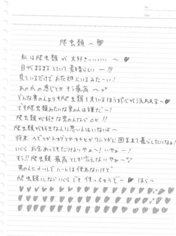
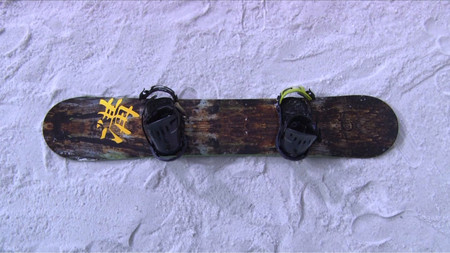

ＭＴＫ「アナコンダ・ラヴ▽」 裏話大公開
みなさんこんにちは！大天才テレビジョン 広報のもっちーです(*uωu*)σ
現在放送中のＭＴＫ、寺田朱里＆ＲＯＬＬＹの「アナコンダ・ラヴ▽」（▽＝ハートマーク）はご覧いただけましたか？
朱里の「は虫類に対する愛」をテーマに、１月放送の「ヒット番組への道～ロック魂でヒットをねらえ！」にも
ご出演いただいたＲＯＬＬＹさんに、作詞作曲していただきましたo(*’▽’*)/☆ﾟ’
今日はこの曲の裏話を書こうと思います～。
その1
すでに気付いている方も多いとは思いますが、、
オープニングのリフは、20年前「天才てれびくんシリーズ」がスタートしたときの
1993年「天才てれびくん」エンディングテーマ曲、すかんち『ＹＯＵ ＹＯＵ ＹＯＵ』のリフと同じものなんです！！！
20年前に天てれを見ていたお父さん、お母さん、おじいちゃん、おばあちゃん、おにいさん、おねえさん・・・
気付きましたかヾ(ﾟ∀ﾟゞ)
その2
実は、この曲の原案を書いたのは…寺田朱里本人なんです。
原案となった紙をここで特別に公開しちゃいます！

ＭＴＫ制作スタッフから「 “は虫類に対しての気持ち”を文章にしてきて」と伝えたら、
朱里からこの紙が送られてきたそうなのですが・・・
このルーズリーフに走り書きされた朱里の、なんだかよくわからない文章から、あんな名曲が生まれるとは…
やっぱりＲＯＬＬＹさん、すごいです (*≧д≦)！！
「アナコンダ・ラヴ▽」明日、明後日も放送します！ぜひご覧くださいませませ～
大天才テレビジョン 広報 もっちー
投稿者:もっちー＠大天才テレビジョン広報室 | 投稿時間:20時40分 | カテゴリ：お知らせ！ | 固定リンク


 " title="ソーシャルブックマークについて">
" title="ソーシャルブックマークについて">
※NHKサイトを離れます。
【ドウブツカメラ！】「金運を呼ぶヘビを撮る」（撮影：朱里・黒澤）
２月２５日（月）放送 『金運を呼ぶヘビを撮る』
今回の動物カメラマンは、寺田朱里と黒澤美澪奈。
２人が撮ったベストショットはこちら！
※画像をクリックすると大きな画像が開きます。
また、開いた画像を右クリックすると保存ができます。
撮影：寺田朱里 『金運を呼ぶ 円』

撮影：黒澤美澪奈 『舌を出せば金が出る』

ロケ中のオフショットはこちら！

投稿者:大天才テレビジョン社員１号 | 投稿時間:19時30分 | カテゴリ：お知らせ！ | 固定リンク
" title="ソーシャルブックマークについて">
※NHKサイトを離れます。
【乗りすけFile】 No.62：スノーボード（2月25日放送）



全長：1m54cm
全高：約10cm
全幅：29cm
重量：約４kg
定員：1名
価格：9万8700円
上に乗って雪上を滑るためウインタースポーツに用いるボード。上級者はジャンプや回転技など多彩なトリックを楽しむことができる。
専用ボードは厚さ約１㎝、バインディングでブーツごと足を固定し、斜面を滑走する。ボードのエッジはわずかに弧を描いており、エッジを雪面に押し当てることで左右に旋回(ターン)することができる。速度の調整もターンによって行う。エッジは鉄製で固い雪面にも対応。
ボード本体は木製で重量は約４kg。耐久性向上のため表面をグラスファイバーでコーティング。裏面は摩擦が少なく水はけの良いポリエチレン性となっている。
これまでの【乗りすけFile】はこちら
投稿者:大天才テレビジョン社員１号 | 投稿時間:18時49分 | カテゴリ：乗りすけさん | 固定リンク
" title="ソーシャルブックマークについて">
※NHKサイトを離れます。
【もうすぐ春ですね】寺田朱里
やっほーのほーーーいっ！！！
春は春夏秋冬の中では、そこまで好きじゃないよ！
でも春は色どりがあざやかな洋服がいっぱいあるから、カラフルな洋服が買いたいなぁー！
でも、やっぱ春といえばお花畑！！！！
お花畑にうもれてみたいなぁっー！！！
きっといい匂いがするとは思うけど、虫がうじゃうじゃだね！！！
それはやめてほしいなぁー！
ということで春はお花畑にいきたいなぁっ！！！
行こーーーっと！！
ふっふふーーーーん！

投稿者:寺田朱里 | 投稿時間:18時00分 | カテゴリ：We are 大天才テレビジョン | 固定リンク
" title="ソーシャルブックマークについて">
※NHKサイトを離れます。